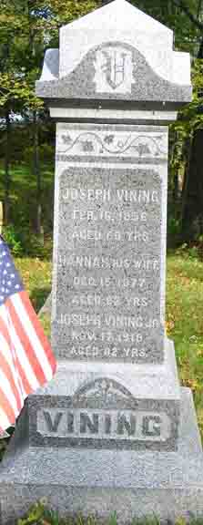

Headstone for Joseph Vining, Hannah (Gardner) Vining, and son Joseph Vining, in Maplewood Cemetery, Rockland, Plymouth County, Massachusetts (from Find A Grave):

Monument side for Levi Lincoln Vining and Mary ([…]) Vining, in Maplewood Cemetery, Rockland, Plymouth County, Massachusetts (from Find A Grave):